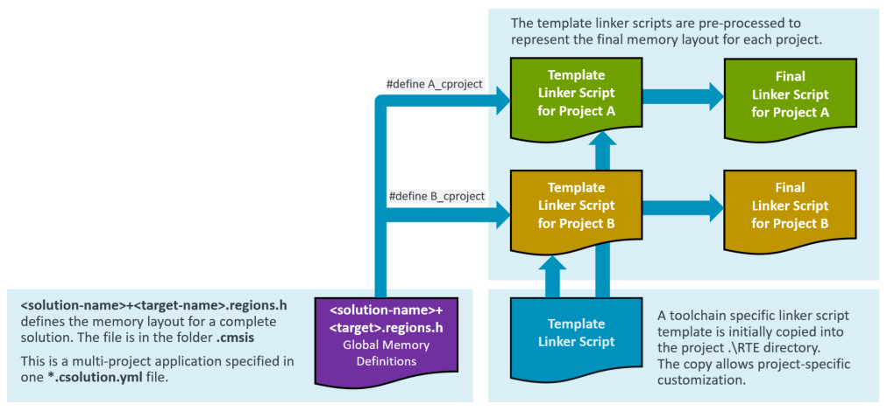

Experimental Features
Experimental features are implemented to iterate on new functionality. Experimental features have limited test coverage and the functionality may change in future versions of the CMSIS-Toolbox without further notice.
The CMSIS-Toolbox 2.7 implements the following experimental features:
Resource Management
In a multi-processor or multi-project application the target type describes the target hardware. A solution is a collection of related projects and the context-set defines the projects that are deployed to the target hardware. A project uses a subset of resources (called regions at linker level).
The linker script management is extended for multi-processor or multi-project applications with the following features:
- When
resources:node is specified in one of the*.cproject.ymlor*.clayer.ymlfiles of a csolution project: - The file
.\cmsis\<solution-name>+<target-name>.regions.his generated. This file contains the global region settings of a solution for one target-type. -
The file
.\cmsis\<solution-name>+<target-name>.regions.hreplaces theregions_<device_or_board>.hthat is located in the directory./RTE/Device/<device>. Theregions_<device_or_board>.his longer generated. -
A
define: <project-name>_cprojectis always added to the linker script pre-processor (also when noresources:node is used).
The following picture explains the extended linker script management for multi-project applications.

resources:
The resources: node specifies the resources required by a project. It is used at the level of project:, setup:, or layer:. The resources: node is additive; when multiple resources: nodes specify the same region the size is added.
Note
In a next iteration, the linker script may be generated by the CMSIS-Toolbox and features from uVision to allocate source modules to specific regions may get added.
Therefore the resources: node is forward looking in the way heap and stack is specified.
resources:
regions:
- region: __ROM0 # region name pre-defined in script template: __ROM0..3
size: 0x10000 # specifies region size
# name: ITCM_Flash - maps to physical memory name(s), if missing use PDSC default memory
# address: - absolution address of region; not in scope for 2.7
# startup: - locate startup/vectors to this region; not in scope for 2.7
# align: - alignment restrictions of the regions; not in scope for 2.7
- region: __RAM0 # region name pre-defined in script template: __RAM0..3
size: 0x8000 # specifies region size
heap: 0x2000 # heap size (only permitted region __RAM0)
stack: 0x4000 # stack size (only permitted in region __RAM0)
# name: - maps to physical memory name(s), if missing use PDSC default memory
# - SRAM1
# - SRAM2
# address: - absolution address of region; not in scope for 2.7
# align: - alignment restrictions of the regions; not in scope for 2.7
# sections: - potentially locate sections (requires linker script generation); not in scope for 2.7
# - .text.function
Example <solution-name>+<target-name>.regions.h file
#ifndef USBD_STM32F746G_DISCO_REGIONS_H
#define USBD_STM32F746G_DISCO_REGIONS_H
// *** DO NOT MODIFY THIS FILE! ***
//
// Generated by csolution 2.7.0 based on packs and csolution project resources
// Device Family Pack (DFP): Keil::STM32F7xx_DFP@3.0.0
// Board Support Pack (BSP): Keil::STM32F746G-DISCO_BSP@1.0.0
// Available Physical Memory Resources
// rx ROM: Name: ITCM_Flash (from DFP) BASE: 0x00200000 SIZE: 0x00100000
// rx ROM: Name: Flash (from DFP) BASE: 0x08000000 SIZE: 0x00100000 (default)
// rwx RAM: Name: DTCM (from DFP) BASE: 0x20000000 SIZE: 0x00010000
// rwx RAM: Name: SRAM1 (from DFP) BASE: 0x20010000 SIZE: 0x00020000 (default)
// rwx RAM: Name: SRAM2 (from DFP) BASE: 0x20030000 SIZE: 0x00020000 (default)
// rwx RAM: Name: BKP_SRAM (from DFP) BASE: 0x40024000 SIZE: 0x00001000
// rwx RAM: Name: ITCM (from DFP) BASE: 0x00000000 SIZE: 0x00004000
//--------------------------------------
#ifdef A_cproject
// Resources allocated in A.cproject.yml
#define __ROM0_BASE 0x08000000 /* Memory Name: Flash */
#define __ROM0_SIZE 0x00010000
#define __RAM0_BASE 0x20010000 /* Memory Name: SRAM1 */
#define __RAM0_SIZE 0x00008000
#define __STACK_SIZE 0x00004000
#define __HEAP_SIZE 0x00002000
#endif /* A_cproject */
//--------------------------------------
#ifdef B_cproject
// Resources allocated in B.cproject.yml
#define __ROM0_BASE 0x08010000 /* Memory Name: Flash */
#define __ROM0_SIZE 0x00030000
#define __RAM0_BASE 0x20018000 /* Memory Name: SRAM1+SRAM2 */
#define __RAM0_SIZE 0x00020000
#define __STACK_SIZE 0x00000200
#define __HEAP_SIZE 0x00000000
#endif /* B_cproject */
#endif /* USBD_STM32F746G_DISCO_REGIONS_H */
Question
- Should the
<solution-name>+<target-name>.regions.hfile contain also#define'sfor the overall avaiable memory, i.e. for a boot loader?
Adding Memory
Hardware targets may have additional off-chip memory. A memory: node that can be added as additional information to a target type as shown below:
solution:
:
target-types:
- type: MyHardware
device: STMicroelectronics::STM32F746NGHx
memory: # Additional memory available in MyHardware
- name: Ext-Flash # Identifier
- access: rx # access permission
- start: 0x40000000
- size: 0x200000
- algorithm: Flash/Ext-Flash.flm # Programming algorithm
Run and Debug Management
The CMSIS-Pack PDSC files contain information about device/board parameters and software components:
- Flash algorithms of device memory (in DFP) and board memory (in BSP).
- On-board debug adapter (a default programming/debug channel) including features.
- Available memory of device and board.
- Device parameters such as processor core(s) and clock speed.
- Debug Access Sequences and System Description Files that support more complex Cortex-A/R/M configurations.
- CMSIS-SVD System View Description (SVD) files for viewing device peripherals.
- CMSIS-View Software Component Viewer Description (SCVD) files for analysis of software components (RTOS, Middleware).
The CMSIS-Toolbox build system manages device/board/software components, controls the build output (typically ELF/DWARF files), and has provisions for HEX, BIN and post-processing. It allows to manage different target-types and the context set manages the images that belong to a target.
In addition the user may need the following information which should be added to the YML-Input files for the CMSIS-Toolbox.
- Flash algorithms for external memory in custom hardware (see Adding Memory).
- ToDo: Additional images that should be loaded.
- ToDo: Device configuration information.
- ToDo: Access information for protected debug ports (i.e. encryption keys).
<solution-name>+<target-name>.cbuild-run.yml
The <solution-name>+<target-name>.cbuild-run.yml is generated in the folder .cmsis and provides the relevant information for executing Run and Debug commands. Overall it:
- simplifies the usage of flash programmers and debuggers.
- provides information for command line and IDE workflows in a consistent way.
- ensures that information is portable, i.e from a cloud-hosted CI system to a desktop test system.
The <solution-name>+<target-name>.cbuild-run.yml file provides access to PDSC information and the build output of one target. It also exports the Debug Access Sequences.

The <solution-name>+<target-name>.cbuild-run.yml file represents a context-set of a solution.
Content of <solution-name>+<target-name>.cbuild-run.yml:
run: # Start of file, contains run and debug information for a target
generated-by: csolution version 2.7.0
solution: ../USB_Device.csolution.yml
target-type: +STM32U585AIIx
compiler: AC6
board: STMicroelectronics::B-U585I-IOT02A:Rev.C
board-pack: Keil::B-U585I-IOT02A_BSP@2.0.0
device: STMicroelectronics::STM32U585AIIx
device-pack: Keil::STM32U5xx_DFP@3.0.0
programming: # Flash programming algorithms
- algorithm: ${CMSIS_PACK_ROOT}/DFP-path/<programming-algorithm>
- algorithm: ${CMSIS_PACK_ROOT}/BSP-path/<programming-algorithm>
config: <potential config options> # is this required
- algorithm: custom-hw-path/<programming-algorithm>
output: # application image files
- type: elf
file: HID.axf
load: <scope> # all (default), symbols only, binary only
system-description:
- file: ${CMSIS_PACK_ROOT}/DFP-path/<svd>
type: svd
- file: ${CMSIS_PACK_ROOT}/pack-path/<scvd>
type: scvd
from-pack: <pack>
# information from DFP, BSP specific to the target
# https://open-cmsis-pack.github.io/Open-CMSIS-Pack-Spec/main/html/packFormat.html
board: # Board element
debugProbe:
...
debugInterface:
...
debug-port: # Information from DFP
access-port-v1:
...
access-port-v2:
...
jtag:
cjtag:
swd:
default-settings: # Default debug configuration
default: # debug protocol (SWD or JTAG) to use for target connections.
clock: # clock setting in Hz for a target connection.
swj: # allows Serial Wire Debug (SWD) and JTAG protocols
dormant: # device access via CoreSight DP requires the dormant state
sdf: ${CMSIS_PACK_ROOT}/DFP-path/<sdf> # path of the system description file (SDF).
sequences:
...
trace:
...
Usage
The *.cbuild-run.yml file can be directly passed to programmers and debug tools, for example using a command line option. It contains all information that needs to be passed.
>programmer -csolution MySolution+MyHardware.cbuild-run.yml
Questions
- What should be done now to simplify above information while making it more future proof?
For CMSIS-Toolbox 3.0:
- Should the location of cbuild information files change to folder
.\.cmsis? - Should the structure of build information file change and include
cbuild-run.yml? The cbuild information file will then represent a context-set, and not just one context.